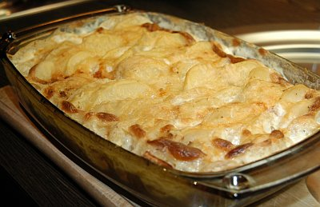

| Zutaten Beilage für 8 Personen: | |
| 1.6 kg | Kartoffeln (gelingt super mit Agria) |
| 2 Tl | Salz |
| Pfeffer, Muskat | |
| 1 l | Rahm |
| 6 | Knoblauchzehen |
| 2 dl | Rahm |
| 100 g | geriebener Greyerzer |
Backofen auf 200°C vorheizen. Gratinform fetten.
Kartoffeln schälen und in 3 mm breite Scheiben schneiden.
Mit Salz, Muskat und Pfeffer würzen und mit gepresstem Knoblauch vermischen.
Mit Rahm übergiessen. Alufolie darauf legen und bei 200°C 50-60 Minuten garen.
Herausnehmen und kühl stellen bis der Gratin fertig gebacken werden soll.
Käse über den Gratin geben und Rahm nachgiessen. Im 200°C heissen Ofen fertig überbacken.
Betty Bossi, Festliche Menüs Seite 46
Wunderbar! Richard Eigenmann, 5.3.2000
@LINKBACK_TAG@ @WAKELOCK@